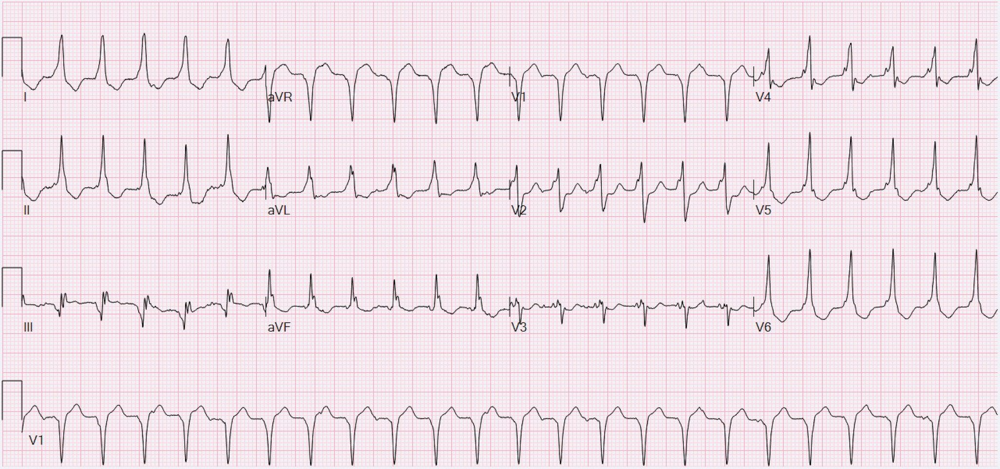
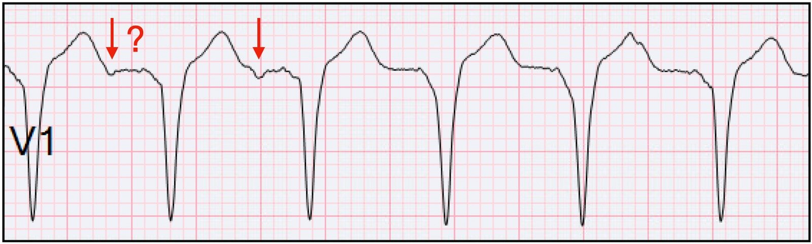
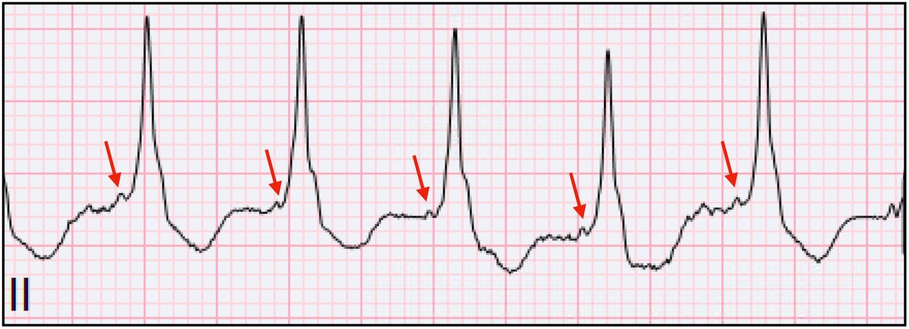
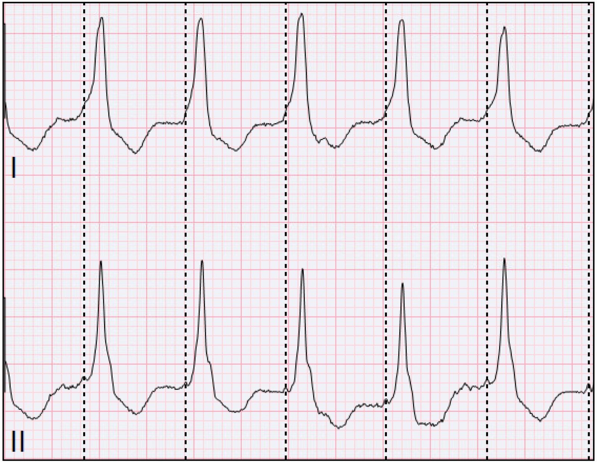
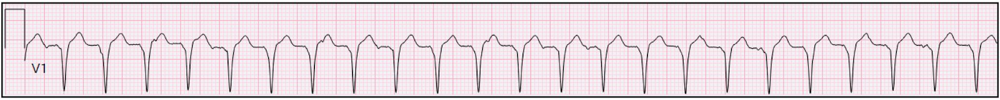
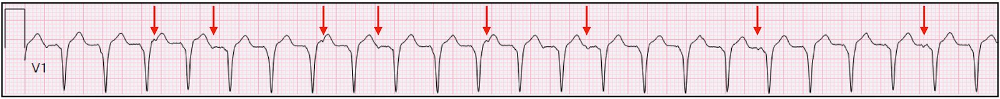
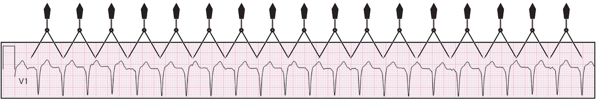
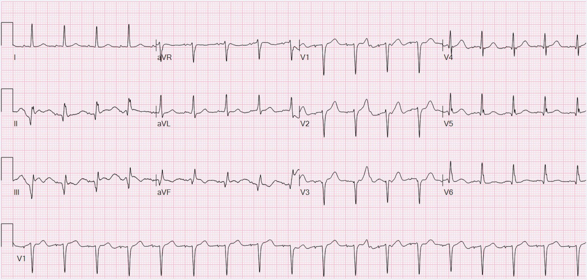
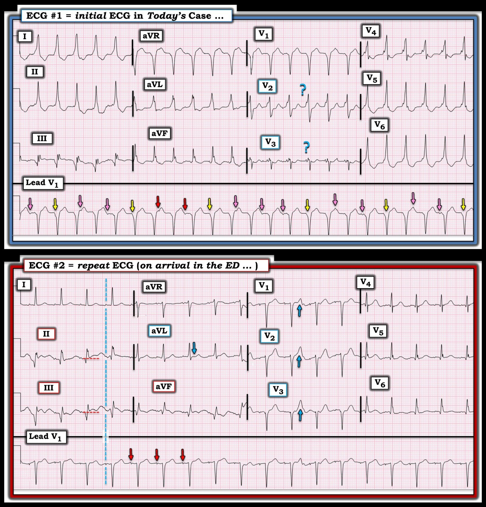

27/12/2024 — Nhịp nhanh tại phòng khám tim mạch, nhịp gì đây?
Bản dịch tiếng Việt của bài "Tachycardia in cardiology clinic, what is the rhythm?" – Dr. Smith’s ECG Blog. Giữ nguyên toàn bộ 10 hình ảnh của bản gốc.
Gửi ẩn danh, viết bởi Willy Frick
Một người đàn ông ngoài 70 tuổi có tiền sử nhồi máu cơ tim (MI) đã lâu (không rõ chi tiết) và đã từng đặt stent đến phòng khám tim mạch để tái khám định kỳ. Ông than phiền hồi hộp đánh trống ngực và khó thở trong nhiều ngày đến nhiều tuần. Điện tâm đồ ghi tại phòng khám được trình bày dưới đây.


Bạn nghĩ sao?
Ở một bệnh nhân cao tuổi than phiền hồi hộp đánh trống ngực, chúng ta có một điện tâm đồ với tần số tim 140 nhịp/phút. Đây là một rối loạn nhịp cho đến khi chứng minh được điều ngược lại. Bước đầu tiên là xác định hoạt động nhĩ. Các chuyển đạo tốt nhất để xem hoạt động nhĩ thường là V1 và II, mặc dù có thể khác nhau giữa từng người. Khi xem V1 để tìm hoạt động nhĩ, không có gì thuyết phục cho hoạt động xoang. Trước nhát thứ hai có thể có một nhát xoang, nhưng điều này có vẻ không nhất quán.


Nhìn vào chuyển đạo II, có một sóng lệch nhỏ trước QRS. Bạn có thể tự hỏi liệu đây có phải là sóng P không.


Tuy nhiên, nếu bạn kẻ một đường thẳng đứng để so với chuyển đạo I bên cạnh, bạn sẽ thấy đây thực ra là một phần của QRS!


Phần khởi đầu trát đậm ở chuyển đạo I gợi ý tiền kích thích (pre-excitation). Nhưng ngay cả trong một SVT có tiền kích thích, vẫn sẽ có một số hoạt động nhĩ. Chúng ta có tìm được nó không?
Hãy xem lại dải nhịp V1 bên dưới và thử tìm bất kỳ bằng chứng nào của hoạt động nhĩ trước khi đọc tiếp. (Như mọi khi, bấm vào ảnh để phóng to!!)


Khi xem xét kỹ, bạn có thể nhận thấy một vài dạng sóng bất thường. Tôi đã chỉ ra một số ứng viên đáng tin nhất cho hoạt động nhĩ.


Điều này gợi ra khả năng phân ly nhĩ thất (AV dissociation). Một cách tốt để kiểm chứng là dùng compa đo (calipers) để “dò bước” các sóng P theo cả hai hướng. Hãy nhớ rằng hoạt động xoang không phải lúc nào cũng đều hoàn hảo. Nó có thể thay đổi nhẹ từ nhát này sang nhát kế tiếp.
Chấp nhận một chút sai lệch linh hoạt như vậy, chúng ta có thể chọn hai mũi tên nằm sát nhau ở trên và dò bước chúng theo cả hai hướng để được hình sau:


Một số đầu compa rơi vào giữa phức bộ QRS, nơi không thể nhận ra một sóng P bị vùi lấp, nhưng ngoài những chỗ đó chúng khớp bước hoàn hảo với các sóng lệch bất thường trên dạng sóng! Đây là một phát hiện then chốt. Điều này chứng minh có phân ly nhĩ thất, và mở rộng ra là nhịp nhanh thất.
Bác sĩ tim mạch khám bệnh nhân tại phòng khám đã không nhận ra điều này. Ghi chép bệnh án nêu chẩn đoán “nhịp nhanh”, được mô tả là “phức bộ hẹp”. (Thời gian QRS khoảng 144 ms, chắc chắn không hẹp.) Ghi chép cho biết các nghiệm pháp cường phế vị không thành công, và đề nghị đánh giá tại khoa cấp cứu (ER). Ghi chép cho biết vợ bệnh nhân sẽ chở ông đến khoa cấp cứu.
Điện tâm đồ ghi lại tại khoa cấp cứu:


May mắn cho bệnh nhân, cơn nhịp nhanh thất của ông tự hết. Điện tâm đồ hiện tại cho thấy nhịp nhanh xoang với nhồi máu thành dưới cũ. (Nói chính xác, điện tâm đồ tại phòng khám cũng có nhịp nhanh xoang nằm bên dưới nhịp nhanh thất.) Ông được nhập khoa tim mạch. Troponin xét nghiệm liên tiếp không phát hiện được. Hồ sơ ghi chẩn đoán “nhịp nhanh xoang”.
Nhân tiện, nhịp nhanh xoang tần số 140 ở một người đàn ông cao tuổi là điều rất đáng lo ngại và đòi hỏi phải có lời giải thích. Mức này tương đương khoảng 95% tần số xoang tối đa dự đoán của bệnh nhân. Điều này đòi hỏi phải có lời giải thích — nhiễm khuẩn huyết, xuất huyết, hội chứng cai, v.v. Kết luận nhịp nhanh xoang gợi ra nhiều câu hỏi hơn là câu trả lời.
Sau khi loại trừ ACS, bệnh nhân được chụp mạch vành và phát hiện bệnh mạch vành ổn định mức độ nặng, điều đã được biết từ trước. Ông được xuất viện với kế hoạch PCI ngoại trú cho RCA bị tắc mạn tính. Không hề có đề cập nào đến nhịp nhanh thất.
May mắn cho bệnh nhân, người gửi ca này đã phát hiện ra nó khi đọc điện tâm đồ. Người gửi đã bắt đầu cho bệnh nhân dùng amiodarone và sắp xếp cấy máy khử rung tim.

===================================
BÌNH LUẬN CỦA TÔI, bởi KEN GRAUER, MD (27/12/2024):
===================================
Bàn luận xuất sắc của bác sĩ Frick trong ca hôm nay, làm nổi bật một loạt điểm quan trọng liên quan đến việc nhận biết trên điện tâm đồ VT ổn định (nhịp nhanh thất – Ventricular Tachycardia). Tôi sẽ bổ sung các điểm tôi ghi nhận dưới đây.
- Để rõ ràng và dễ so sánh, trong Hình 1 — tôi đã đánh nhãn và đặt hai điện tâm đồ 12 chuyển đạo của ca hôm nay cạnh nhau.
Bao lâu một bệnh nhân có thể duy trì trong VT ổn định?
Ca hôm nay đáng chú ý ở chỗ người đàn ông ngoài 70 tuổi này, với tiền sử đã biết là nhồi máu cơ tim trước đây và từng đặt stent, đã bị một bác sĩ tim mạch chẩn đoán nhầm là SVT (nhịp nhanh trên thất – SupraVentricular Tachycardia). Các nghiệm pháp cường phế vị đã được thử — nhưng không thành công. Sau đó bệnh nhân được chuyển đến khoa cấp cứu (ED) để đánh giá, không phải bằng xe cứu thương — mà do vợ ông chở đến. Và trong suốt thời gian đó — bệnh nhân này đang ở trong VT ổn định!
- Theo bệnh sử (vì bệnh nhân này đã than phiền hồi hộp đánh trống ngực trong nhiều ngày đến nhiều tuần và khó thở) — hoàn toàn có thể bệnh nhân này đã ở trong VT ổn định suốt nhiều ngày đến nhiều tuần!
- 2 yếu tố chính nhiều khả năng đã dẫn đến chẩn đoán nhầm rối loạn nhịp hôm nay: i) Bệnh sử của bệnh nhân kéo dài trong một khoảng thời gian dài (tức là hồi hộp đánh trống ngực trong nhiều ngày đến nhiều tuần); — và ii) Bệnh nhân ổn định huyết động suốt quá trình đánh giá ban đầu bởi bác sĩ tim mạch (kể cả trong lúc thực hiện nghiệm pháp cường phế vị).
- Như tôi đã nhiều lần lưu ý trên Dr. Smith’s ECG Blog (Xem Bình luận của tôi trong các bài đăng ngày 20 tháng Chín năm 2023 — ngày 10 tháng Một năm 2024 — và ngày 2 tháng Tư năm 2022 chỉ kể một vài ví dụ) — tôi biết nhiều ca VT bền bỉ trong đó bệnh nhân vẫn tỉnh táo trong nhiều giờ. Tôi cũng biết một số ca (kể cả một ca tại bệnh viện cũ của tôi) — trong đó bệnh nhân vẫn tỉnh táo khi đang ở trong VT bền bỉ suốt nhiều ngày.
- BÀI HỌC rất rõ ràng: Chỉ vì một bệnh nhân vẫn tỉnh táo với huyết áp đủ trong một khoảng thời gian dài — không loại trừ khả năng VT bền bỉ. Nếu tần số thất không quá nhanh (chẳng hạn như ~140/phút ở điện tâm đồ ban đầu của ca hôm nay) — và bệnh nhân có chức năng thất trái tương đối tốt — thì hoàn toàn có thể duy trì trong VT bền bỉ hàng giờ, thậm chí hàng ngày.
- Y văn ủng hộ tiền đề rằng hoàn toàn có thể duy trì trong VT bền bỉ nhiều ngày liền (Symanski & Marriott — Heart-Lung 24:121,123, 1995). Trong báo cáo ca bệnh này — một phụ nữ 69 tuổi (tình cờ có tiền sử cả bệnh mạch vành lẫn bệnh cơ tim) — đã ở trong VT bền bỉ suốt 5 ngày mà không suy giảm huyết động. Trong thời gian này, bà được điều trị tại bệnh viện bằng nhiều thuốc chống loạn nhịp gồm Adenosine, Verapamil và Digoxin. Vào ngày nằm viện thứ 5 — bà được dùng Amiodarone, thuốc này đã chuyển nhịp thành công. May mắn thay — bà đã “sống sót” qua quá trình điều trị trên (vì mỗi thuốc trong 3 thuốc được dùng đầu tiên đều có thể gây tử vong, do chúng có xu hướng làm VT diễn tiến xấu đi trong bối cảnh bệnh mạch vành nền nặng). LƯU Ý: Mặc dù báo cáo ca này từ năm 1995 — việc chẩn đoán nhầm các nhịp nhanh QRS rộng “vì bệnh nhân ổn định” vẫn còn quá phổ biến vào năm 2025.
Tầm quan trọng của thống kê và hình thái QRS:
Việc người đàn ông lớn tuổi trong ca hôm nay có bệnh mạch vành đã biết — có nghĩa là ngay cả trước khi nhìn vào điện tâm đồ ban đầu của ông — xác suất thống kê để nhịp WCT (nhịp nhanh QRS rộng – Wide-Complex Tachycardia) đều của ông là VT đã ít nhất là 90%.
- Xác suất thống kê để nhịp này là VT còn có thể tăng thêm khi ghi nhận các điểm sau ở điện tâm đồ #1: i) Hình thái QRS không điển hình cho bất kỳ rối loạn dẫn truyền đã biết nào (tức là thay vì âm ưu thế ở các chuyển đạo trước tim cho đến ít nhất V4 như trong LBBB — QRS đã dương rõ ràng ngay từ V2); — và, ii) Thay vì một vectơ khử cực ban đầu nhanh (như rất thường thấy ở các nhịp SVT) — vectơ khử cực QRS ban đầu lại bị chậm (cũng như bị phân mảnh) ở nhiều chuyển đạo (chẳng hạn như III và V2 đến V6).
- LƯU Ý: Ngoại lệ duy nhất có thể giải thích hình thái QRS bất thường thấy trên điện tâm đồ ban đầu hôm nay — là nếu tìm được một điện tâm đồ nền trước đây ở nhịp xoang cho thấy cùng hình thái QRS bất thường đó. Vì bệnh nhân này đã được khám và điều trị ban đầu (làm nghiệm pháp cường phế vị) tại phòng khám tim mạch — có lẽ đã có thời gian để nhanh chóng tìm hồ sơ bệnh nhân có điện tâm đồ trước đó ở nhịp xoang.
Những điều cần biết về phân ly nhĩ thất:
Bác sĩ Frick đã khéo léo trình bày tuần tự, chi tiết các bước ông thực hiện để xác định phân ly nhĩ thất trên điện tâm đồ #1. Như ông nhấn mạnh — việc xác định sự tồn tại của một nhịp nhĩ độc lập bên dưới chứng minh rằng nhịp còn lại trên bản ghi này, biểu hiện bằng các phức bộ QRS đều nhưng rộng, phải có nguồn gốc từ thất.
- Điểm MẤU CHỐT: Theo kinh nghiệm của tôi khi tỉ mỉ tìm phân ly nhĩ thất trong mọi nhịp WCT tôi gặp suốt nhiều thập kỷ — hiếm khi tìm thấy nó! Đáng tiếc, sự mong muốn (hy vọng) “thấy được” phân ly nhĩ thất thường khiến những người làm cấp cứu đi lạc hướng.
- Thực tế là chẩn đoán xác định VT không khó đến thế khi tần số của nhịp WCT không quá nhanh. Đó là vì các nhát hỗn hợp có giá trị chẩn đoán và phân ly nhĩ thất dễ thấy hơn nhiều ở các nhịp thất tương đối chậm này. Vấn đề phát sinh với các nhịp WCT tương đối nhanh hơn — vì hoạt động nhĩ đều bên dưới rất thường bị che khuất trong các phức bộ QRS rộng và các sóng ST-T đi kèm còn rộng hơn.
- Kinh nghiệm của tôi: Phần lớn các ca được cho là “phân ly nhĩ thất” mà tôi thấy người khác xác định — hóa ra là các “gợn sóng” do nhiễu chứ không phải phân ly nhĩ thất thực sự. Điều này rất quan trọng — vì NẾU bạn thực sự xác định được phân ly nhĩ thất (như bác sĩ Frick đã làm trong ca hôm nay) — thì bạn đã chẩn đoán xác định VT. Nhưng nếu bạn chỉ nghĩ rằng mình có thể đang thấy phân ly nhĩ thất trong một nhịp WCT đều — thì tốt nhất không đưa thông tin này vào đánh giá của bạn, vì nhiều khả năng nó sẽ dẫn bạn đi sai hướng.
- ĐIỂM THEN CHỐT (PEARL): Tốt nhất không chẩn đoán phân ly nhĩ thất trừ khi bạn chắc chắn 100% về dấu hiệu này. Và cách duy nhất để bạn chắc chắn 100% có phân ly nhĩ thất — là khi bạn có thể dò bước được hoạt động nhĩ đều, độc lập bên dưới qua ít nhất một phần đáng kể của dải nhịp. Tìm được 2, 3 hay 4 “gợn sóng” mà không dò bước tiếp được thì không phải là “bằng chứng” của phân ly nhĩ thất.
Trước khi đọc mô tả của bác sĩ Frick trong ca hôm nay — tôi cũng đã nghi ngờ có phân ly nhĩ thất. Đó là vì mặc dù các phức bộ QRS bị phân mảnh nhiều như ta thấy trên điện tâm đồ #1 — toàn bộ bản ghi lại “sạch” một cách đáng ngạc nhiên, không có nhiễu đáng kể. Đây là lý do tôi nghi ngờ các sóng lệch âm nhỏ mà ta thấy từng lúc trong suốt dải nhịp dài V1 là “thật”.
- Tôi đánh dấu 2 sóng lệch mà tôi đã chọn để đặt compa đo theo khoảng P-P tôi nghi ngờ (bằng các mũi tên ĐỎ trên điện tâm đồ #1).
- Tương tự như bác sĩ Frick — sau đó tôi đánh dấu (bằng các mũi tên HỒNG trong Hình 1) các dấu hiệu từng lúc của hoạt động nhĩ bổ sung.
- “Bằng chứng” cuối cùng về phân ly nhĩ thất thực sự đã có khi tôi có thể thêm các dấu đánh dấu (bằng các mũi tên VÀNG đặt theo khoảng P-P tương tự) tại những vị trí mà rõ ràng hoạt động nhĩ đều bên dưới có thể dễ dàng bị che khuất.


=================================
Bản ghi sau chuyển nhịp:
Tôi thấy một số đặc điểm của điện tâm đồ ghi lại (sau khi nhịp VT tự chuyển nhịp) đặc biệt thú vị.
- Giờ đây ta thấy các phức bộ QRS hẹp đều trên điện tâm đồ #2 — được dẫn truyền với khoảng PR hằng định và bình thường, ở cùng tần số nhĩ và với cùng hình thái sóng P như trên điện tâm đồ #1 (các mũi tên ĐỎ trong dải nhịp dài V1 ở điện tâm đồ #2). Điều này khẳng định thêm rằng chúng ta thực sự đã thấy phân ly nhĩ thất trên điện tâm đồ #1.
- Tôi nghi ngờ nhịp nhĩ bên dưới này không phải nhịp xoang — vì không thấy sóng P dương rõ ràng ở chuyển đạo II ghi đồng thời trên bản ghi sau chuyển nhịp (đường chấm XANH LAM cho thấy hình dạng sóng P này ở chuyển đạo II của bản ghi sau chuyển nhịp). Thay vào đó — có vẻ hoạt động nhĩ bên dưới ở cả hai bản ghi trong Hình 1 xuất phát từ một nhịp nhĩ thấp. Biên độ thấp của các sóng P nhĩ lạc chỗ này là một lý do nữa khiến phân ly nhĩ thất rất kín đáo trong ca hôm nay.
- Cuối cùng — bác sĩ Frick mô tả chi tiết rằng bệnh nhân hôm nay được phát hiện bệnh mạch vành ổn định mức độ nặng mà không có bằng chứng của biến cố cấp. Tuy nhiên, khi lần đầu nhìn thấy điện tâm đồ #2 — tôi có một nhận định khác. Thay vào đó, trong bối cảnh có sóng Q lớn ở các chuyển đạo thành dưới — “con mắt” của tôi bị thu hút bởi: i) Một mức ST chênh lên nhỏ-nhưng-thật ở các chuyển đạo thành dưới (ít nhất ở II và III) — kèm gợi ý sóng T đảo ngược do tái tưới máu ở aVF; — ii) Có thể là thay đổi soi gương mới xuất hiện gần đây (đoạn ST dẹt bất thường kín đáo ở aVL); — và, iii) Có thể là sóng T tái tưới máu thành sau, biểu hiện bằng sóng T dương tăng lên ở V1,V2,V3. Do đó tôi nghi ngờ nguyên nhân gây VT ở bệnh nhân này có thể là OMI dưới-sau mới xảy ra, nay có bằng chứng của sóng T tái tưới máu.
- LƯU Ý: Nhịp nhanh vẫn còn trên bản ghi sau chuyển nhịp này ( = điện tâm đồ #2). Điều quan trọng cần nhận thức là đôi khi — nhịp nhanh có thể làm nổi bật các thay đổi sóng ST-T (ST chênh lên và/hoặc chênh xuống) mà không còn nữa khi tần số tim chậm lại. Vì vậy — tôi nhận thấy cần theo dõi thêm để xác định ý nghĩa (nếu có) của các dấu hiệu sóng ST-T tôi mô tả trên điện tâm đồ #2 (và theo bác sĩ Frick — đánh giá sau đó đã xác nhận không có thay đổi nào trong số này là cấp tính).